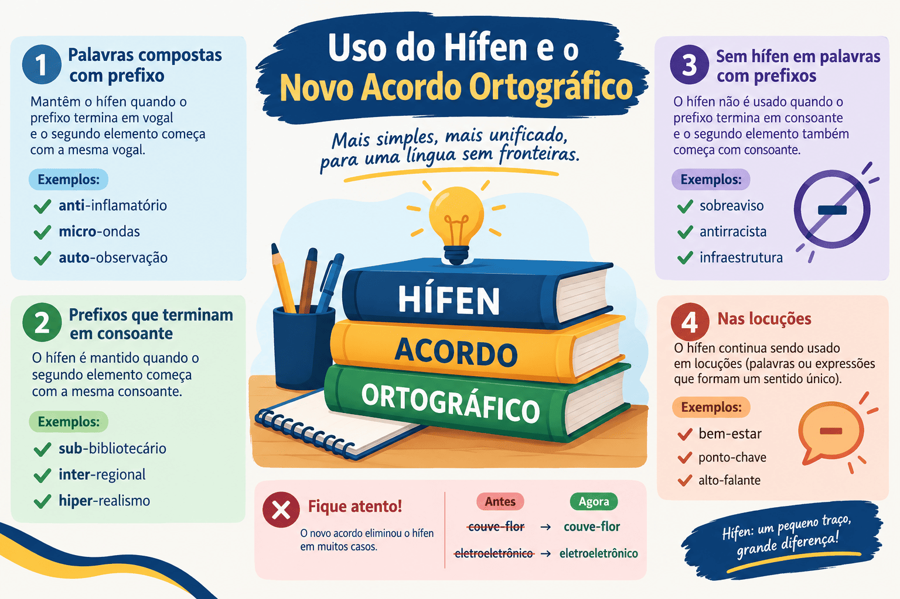

Uso do Hífen e o Novo Acordo Ortográfico: Guia Prático e Regras
O emprego do hífen na Língua Portuguesa sempre foi motivo de insegurança ortográfica entre estudantes, vestibulandos e candidatos a concursos públicos. Com a implementação definitiva do Novo Acordo Ortográfico, diversas normas foram simplificadas e sistematizadas, buscando estabelecer parâmetros lógicos para o encadeamento de prefixos e a união de palavras compostas.
Apesar da simplificação de critérios, o hífen continua sendo uma das principais fontes de desvios gramaticais em redações de exames formais, como o ENEM e o PAES UEMA. Pequenos deslizes na aglutinação de vocábulos ou na separação indevida de termos podem comprometer a avaliação da competência gramatical e da norma-padrão.
Neste guia prático do Mestre Kira, você aprenderá as regras definitivas do hífen com prefixos (a famosa "regra dos ímãs"), o comportamento especial diante das letras H, R e S, o uso em palavras compostas e locuções, as exceções consagradas e um quiz interativo de 10 questões com gabarito comentado para fixar o aprendizado.

A Regra Geral com Prefixos: "A Lei dos Ímãs"
A forma mais simples de memorizar o emprego do hífen na junção de um prefixo (ou falso prefixo) com o segundo elemento é compará-lo à física dos ímãs:
- Letras iguais se repelem: se o prefixo terminar com a mesma letra com que se inicia a palavra seguinte, usa-se o hífen;
- Letras diferentes se atraem: se o prefixo terminar com letra diferente daquela com que se inicia a palavra seguinte, junta-se tudo sem hífen.
Regra de ouro: Letras iguais → com hífen (ex.: micro-ondas, anti-inflamatório). Letras diferentes → junto e sem hífen (ex.: autoescola, infraestrutura).
1. Letras iguais: usa-se o hífen
Sempre que a letra final do prefixo for idêntica à letra inicial da palavra seguinte (sejam vogais ou consoantes), o hífen é obrigatório:
Prefixos terminados na mesma letra do segundo elemento:
- micro + ondas = micro-ondas;
- anti + inflamatório = anti-inflamatório;
- contra + ataque = contra-ataque;
- auto + observação = auto-observação;
- inter + racial = inter-racial;
- sub + base = sub-base;
- super + resistente = super-resistente.
Exceção com os prefixos co-, re-, pre- e pro- (átonos): esses prefixos aglutinam-se quase sempre com o segundo elemento, mesmo diante de vogal igual: coordenar, cooperação, reescrever, preexistir, proativo.
2. Letras diferentes: não se usa o hífen
Quando o prefixo termina por uma vogal e a palavra subsequente começa por outra vogal diferente, ou consoante diferente, escreve-se tudo junto:
Prefixos terminados em letra diferente:
- auto + escola = autoescola (e não *auto-escola);
- infra + estrutura = infraestrutura;
- semi + aberto = semiaberto;
- anti + aéreo = antiaéreo;
- pluri + anual = plurianual;
- tele + comunicação = telecomunicação;
- extra + curricular = extracurricular.
O Caso Especial da Letra "H"
A letra H é etimológica e não possui representação fonética no início de palavras em português. Em razão dessa instabilidade articulatória, sempre que o segundo elemento começar por H, deve-se usar o hífen, independentemente de qual seja o prefixo.
Qualquer Prefixo + palavra iniciada por "H" = Hífen Obrigatório
anti-higiênico | super-homem | sobre-humano | pré-história
Exemplos de prefixos diante da letra H:
- anti + higiênico = anti-higiênico;
- super + homem = super-homem;
- macro + história = macro-história;
- ultra + humano = ultra-humano;
- geo + história = geo-história.
Exceções históricas com perda do H: quando os prefixos des- e in- se uniram historicamente a termos com H, este desapareceu na grafia consolidada: desumano (des + humano), inábil (in + hábil), desonra (des + honra), reabilitar (re + habilitar).
Prefixos diante das Consoantes "R" e "S"
Quando o prefixo termina por vogal e a palavra seguinte se inicia pelas consoantes R ou S, o hífen é eliminado e as consoantes devem ser duplicadas (rr e ss) para preservar o fonema original.
Prefixo terminado em VOGAL + palavra com R ou S → Junta e Duplica (-rr- / -ss-)
anti + social = antissocial | ultra + som = ultrassom | auto + retrato = autorretrato
Exemplos de duplicação consonantal:
- anti + reflexo = antirreflexo;
- mini + saia = minissaia;
- micro + sistema = microssistema;
- semi + reta = semirreta;
- contra + senso = contrassenso;
- supra + renal = suprarrenal.
Prefixo terminado em VOGAL
Minissaia / Antirruído
O prefixo termina em vogal: elimina-se o hífen e duplicam-se as letras R ou S.
Prefixo terminado em CONSOANTE R
Inter-racial / Super-resistente
O prefixo termina em R e a palavra seguinte começa com R (letras iguais): separa-se com hífen!
Atenção aos prefixos terminados em consoante (sub-, inter-, hiper-, super-)
- Prefixos terminados em R (inter-, super-, hiper-): diante de palavra com R, usa-se hífen (inter-racial, super-revista). Diante de palavra iniciada por S ou outra letra, junta-se sem duplicar (intermunicipal, supersônico);
- Prefixo sub-: diante de palavras iniciadas por B ou R, usa-se o hífen (sub-base, sub-região, sub-reitor). Diante de palavras com outras consoantes, junta-se (subsolo, subclasse, subchefe).
Prefixos com Hífen Obrigatório em Qualquer Situação
Determinados prefixos e formas prefixais conservam a exigência de hífen independentemente da letra inicial do termo subsequente:
1. Prefixos tônicos e acentuados (pré-, pró-, pós-)
Quando são tônicos, possuem acento gráfico e mantêm autonomia fonética, exigem hífen obrigatoriamente:
- pré-: pré-vestibular, pré-natal, pré-história, pré-requisito;
- pró-: pró-reitoria, pró-governo, pró-ativo (ao lado de proativo);
- pós-: pós-graduação, pós-moderno, pós-operatório.
Atenção: se a forma for átona (sem acento), aglutina-se sem hífen: prever, propor, postergar, predeterminar.
2. Prefixos ex-, sem-, além-, aquém-, recém-, vice-, grão-, grã-
Estes elementos exigem hífen em todas as situações da norma-padrão:
Exemplos de uso constante de hífen:
- ex- (no sentido de cessação): ex-diretor, ex-presidente, ex-aluno;
- sem-: sem-terra, sem-teto, sem-vergonha, sem-número;
- recém-: recém-nascido, recém-casado, recém-chegado;
- vice-: vice-presidente, vice-campeão, vice-reitor;
- além- / aquém-: além-mar, aquém-fronteiras;
- grão- / grã-: grão-duque, grã-fino.
3. Prefixos pan- e circum-
Exigem hífen quando o segundo elemento começar por vogal, M, N ou H: pan-americano, circum-navegação, circum-hospitalar. Diante de outras consoantes, junta-se sem hífen: panteísmo, circuncisão.
Hífen em Palavras Compostas e Locuções
Nas palavras compostas, o Acordo Ortográfico estabeleceu diretrizes para unificar a grafia de compostos vocabulares e locuções:
1. Compostos com elementos de ligação (NÃO levam hífen)
Palavras compostas unidas por preposição ou conjunção perderam o hífen na língua portuguesa:
Compostos grafados sem hífen:
- dia a dia;
- fim de semana;
- pé de moleque;
- sala de aula;
- ponto e vírgula;
- café com leite;
- cara de pau.
Exceções consagradas: mantêm o hífen algumas expressões tradicionais consagradas pelo uso contínuo, como: água-de-colônia, cor-de-rosa, mais-que-perfeito, pé-de-meia, gota-d'água, ao deus-dará.
2. Nomes de espécies botânicas e zoológicas (SEMPRE levam hífen)
Todos os substantivos que nomeiam espécies biológicas (animais e plantas) conservam obrigatoriamente o hífen, mesmo quando possuem preposição ou elemento de ligação:
- feijão-de-corda;
- mico-leão-dourado;
- andorinha-do-mar;
- erva-doce;
- tamanduá-bandeira;
- bem-te-vi.
3. Compostos sem elemento de ligação (mantêm hífen)
Palavras compostas formadas por justaposição que preservam unidade semântica independente continuam com hífen: guarda-chuva, segunda-feira, arco-íris, boa-fé, decreto-lei, couve-flor.
Atenção para vocábulos aglutinados: em termos que perderam totalmente a noção de composição na consciência dos falantes, consolidou-se a grafia sem hífen: paraquedas, paraquedista, mandachuva, pontapé.
Quadro Síntese das Regras do Hífen
| Estrutura Morfológica | Regra Ortográfica | Exemplos Canônicos |
|---|---|---|
| Prefixo + Letra Igual | Com hífen (letras iguais se repelem) | Micro-ondas, anti-inflamatório |
| Prefixo + Letra Diferente | Sem hífen (letras diferentes se atraem) | Autoescola, infraestrutura |
| Prefixo + Letra H | Com hífen em qualquer situação | Super-homem, anti-higiênico |
| Prefixo em vogal + R ou S | Sem hífen e duplica (-rr- / -ss-) | Antissocial, minissaia, autorretrato |
| Pré-, pró-, pós- (tônicos) | Com hífen sempre | Pré-vestibular, pós-graduação |
| Ex-, vice-, sem-, recém- | Com hífen sempre | Ex-aluno, vice-presidente, sem-teto |
| Compostos com preposição | Sem hífen (regra geral) | Fim de semana, dia a dia |
| Espécies biológicas | Com hífen sempre | Mico-leão-dourado, feijão-de-corda |
Passo a passo para não errar o hífen na redação
- É uma palavra com prefixo?
- O segundo termo começa com H? → Usa hífen (ex.: sobre-humano).
- O prefixo termina com a mesma letra que o segundo começa? → Usa hífen (ex.: micro-ônibus).
- O prefixo termina em vogal e a palavra seguinte começa com R ou S? → Junta e dobra a consoante (ex.: contrarregra, ultrassom).
- As letras de encontro são diferentes? → Junta tudo sem hífen (ex.: autoafirmação).
- É um prefixo de hífen fixo (ex-, vice-, sem-, recém-, pré-)? → Usa hífen sempre (ex.: vice-líder).
- É uma palavra composta com preposição no meio? → Não usa hífen (ex.: fim de semana, sala de aula), a menos que seja espécie botânica/zoológica (ex.: andorinha-do-mar).
Quiz — Uso do Hífen e o Novo Acordo Ortográfico
Questão 1 — Assinale a alternativa em que todas as palavras estão grafadas corretamente segundo o Novo Acordo Ortográfico:
Questão 2 — Diante de vocábulos iniciados pela letra "H", a regra ortográfica determina que:
Questão 3 — A junção do prefixo “contra” com a palavra “senso” resulta na grafia:
Questão 4 — Em relação às palavras compostas ligadas por preposição, assinale a opção correta:
Questão 5 — Assinale a alternativa que contém erro ortográfico quanto ao uso do hífen:
Questão 6 — O vocábulo “paraquedas” é grafado sem hífen porque:
Questão 7 — Na junção do prefixo “inter” com “racial”, o correto é escrever:
Questão 8 — Qual dos seguintes termos com o prefixo “co-” está em desacordo com a norma ortográfica?
Questão 9 — Os vocábulos “pós-graduação” e “pré-vestibular” levam hífen porque:
Questão 10 — Assinale a opção em que a grafia do vocábulo está correta:
Resumo sobre o uso do hífen
- Letras iguais se repelem: usa-se hífen quando o prefixo termina com a mesma letra que inicia a próxima palavra (ex.: micro-ondas, anti-inflamatório).
- Letras diferentes se atraem: não se usa hífen quando as letras de encontro forem diferentes (ex.: autoescola, infraestrutura).
- Prefixo + H: usa-se hífen sempre (ex.: super-homem, anti-higiênico).
- Prefixo em vogal + R ou S: elimina-se o hífen e duplicam-se as consoantes (ex.: antissocial, minissaia, autorretrato).
- Prefixos tônicos acentuados: pré-, pró-, pós- exigem hífen sempre (ex.: pré-vestibular, pós-graduação).
- Prefixos fixos com hífen: ex-, vice-, sem-, recém-, além-, aquém- levam hífen em qualquer contexto.
- O prefixo co-: aglutina-se sem hífen mesmo com vogal igual (ex.: cooperação, coordenar).
- Compostos com preposição: não levam hífen (ex.: fim de semana, dia a dia).
- Espécies biológicas: conservam o hífen obrigatoriamente (ex.: mico-leão-dourado, feijão-de-corda).
Conclusão
O domínio do hífen de acordo com o Novo Acordo Ortográfico proporciona segurança fundamental na produção de textos acadêmicos, escolares e profissionais. Embora o tema pareça detalhista à primeira vista, a memorização dos eixos centrais — a lei dos ímãs, o caso da letra H e a duplicação do R e S — resolve a imensa maioria dos casos práticos do dia a dia.
Evitar desvios de hifenização na redação do ENEM e de vestibulares como o PAES UEMA é um diferencial decisivo para alcançar notas de excelência na competência de correção gramatical e ortográfica.
Perguntas frequentes sobre o hífen
Como funciona a "regra dos ímãs" para o hífen?
É uma analogia prática: letras iguais se repelem (usa-se hífen, como em anti-inflamatório e micro-ondas) e letras diferentes se atraem (escreve-se junto e sem hífen, como em autoescola e infraestrutura).
"Fim de semana" ou "dia a dia" levam hífen?
Não. Pelo Acordo Ortográfico, as palavras compostas que contam com elemento de ligação (preposição) não possuem hífen: escreve-se fim de semana, dia a dia e pé de moleque.
Quando devo duplicar as letras R e S?
Quando o prefixo terminar em vogal e a palavra seguinte começar por R ou S. Nesses casos, elimina-se o hífen e duplicam-se as consoantes para preservar o som: antissocial, minissaia, autorretrato.
Por que "cooperar" não tem hífen se tem duas letras O juntas?
Porque os prefixos co- e re- são exceções à regra das vogais iguais: eles aglutinam-se diretamente com o segundo elemento, gerando formas como cooperar, coordenar e reescrever.
As espécies de animais e plantas perderam o hífen?
Não. As espécies zoológicas e botânicas continuam obrigatoriamente hifenizadas, mesmo que possuam preposição: mico-leão-dourado, erva-doce, feijão-de-corda.
Conteúdos relacionados
- Termos Integrantes e Acessórios da Oração
- Orações Coordenadas e Subordinadas: como reconhecer e classificar
- Conjunções da Língua Portuguesa: o que são, tipos, usos e exemplos explicados
- Locuções Adverbiais: o que são, tipos e exemplos
- Sintaxe: estrutura da oração e relações entre as palavras
- Interpretação e Produção Textual
- Gramática da Língua Portuguesa: Guia Completo
- Conteúdos de Gramática — Página 2
- Conteúdos de Gramática — Página 3
- Conteúdos de Gramática — Página 4
Referências bibliográficas
- ACADEMIA BRASILEIRA DE LETRAS. Vocabulário Ortográfico da Língua Portuguesa (VOLP). 5. ed. São Paulo: Global, 2009.
- BECHARA, Evanildo. O que muda com o novo acordo ortográfico. Rio de Janeiro: Nova Fronteira, 2008.
- CEGALLA, Domingos Paschoal. Novíssima Gramática da Língua Portuguesa. 48. ed. São Paulo: Companhia Editora Nacional, 2008.
- CUNHA, Celso; CINTRA, Lindley. Nova Gramática do Português Contemporâneo. 6. ed. Rio de Janeiro: Lexikon, 2013.
- ROCHA LIMA, Carlos Henrique da. Gramática Normativa da Língua Portuguesa. 49. ed. Rio de Janeiro: José Olympio, 2011.
Explore Outros Conteúdos
Continue seus estudos acessando outras seções do site Mestre Kira: